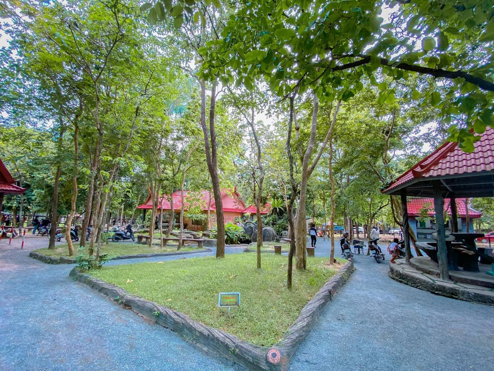
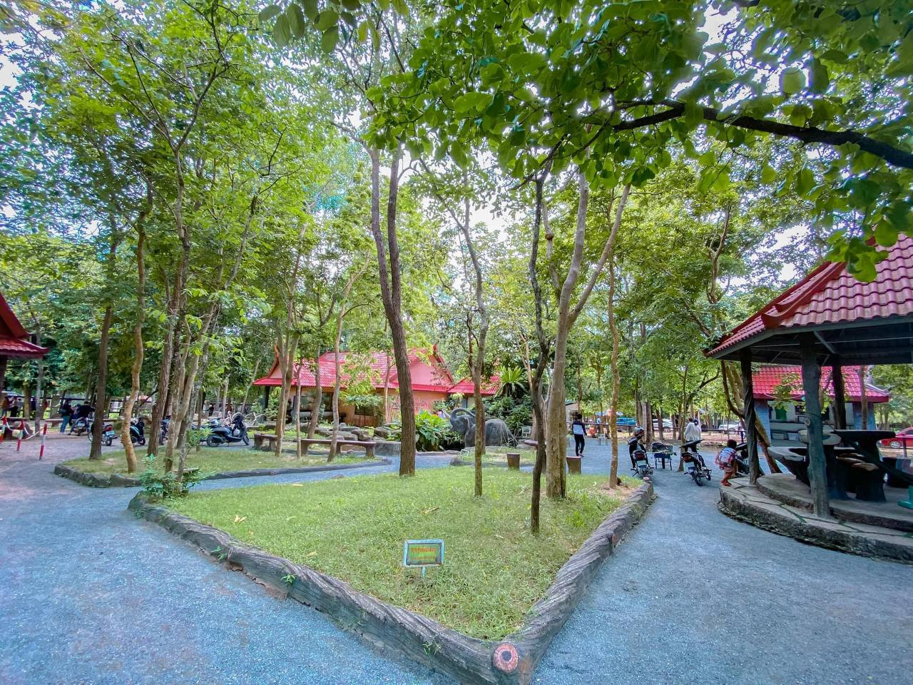
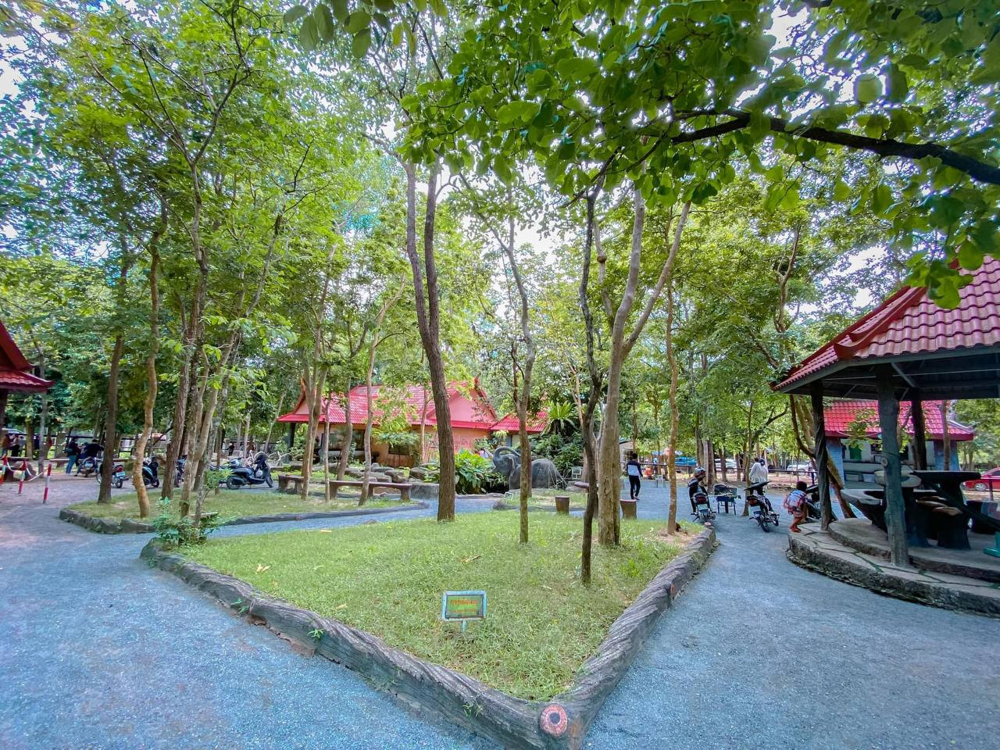

ភ្នំតាម៉ៅមានទីតាំងស្ថិតនៅភូមិត្រពាំងសាប ឃុំត្រពាំងសាប ស្រុកបាទី ខេត្តតាកែវ មានចំងាយ ៤០គ.ម តាមផ្លូវជាតិលេខ ២ពីរាជធានីភ្នំពេញ បត់ស្តាំ ៥គ.ម តាមផ្លូវលំ ដោយប្រើរយៈពេលធ្វើដំណើរតាមរថយន្តអស់ ៤៥នាទី។ ភ្នំនេះជារម្មណីយដ្ឋានចំរុះមានប្រាង្គប្រាសាទ ព្រៃភ្នំ ធម្មជាតិ និងជាសួនសត្វដ៏ធំក្នុងប្រទេសកម្ពុជា។ តំបន់នេះមានផ្ទៃដី ១២០០ ហិចតា ដែលគេអោយឈ្មោះថា តំបន់ផ្ទៃដីការពារព្រៃឈើ។ ក្នុងចំនោមផ្ទៃដី ១២០០ហិចតានេះ ផ្ទៃដីចំនួន ១២០០ហិចតា ត្រូវបាននាយកដ្ឋានរុក្ខាប្រមាញ់ រៀបចំដាំដើមឈើ និងរៀបចំសួនសត្វ ដែលមានផ្ទៃដី ៧០ហិចតា។ ផ្ទៃដី ៧០ហិចតានេះ រួមមាន ភ្នំចំនួន៥ គឺ ភ្នំតាម៉ៅ ភ្នំថ្មដុះ ភ្នំផ្តៅពន្ធ ភ្នំឆយ និងភ្នំបាំង។ ក្នុងចំណោមភ្នំទាំង ៥ នេះមានភ្នំពីរ មានប្រាសាទបុរាណ គឺប្រាសាទតាម៉ៅ (ភ្នំតាម៉ៅ) ប្រាសាទថ្មដុះ (ភ្នំថ្មដុះ) ។
ភ្ញៀវជាតិនិងអន្តរជាតិដែលមកលេងឧទ្យានសួនសត្វ និងមជ្ឈមណ្ឌលសង្គ្រោះសត្វព្រៃភ្នំតាម៉ៅ មិនដែលរំលងទស្សនាសត្វកម្រ ៦ ប្រភេទមានដូចជា ស្វា ពោះថ្លាន់ ក្រពើ ខ្លា តោ ដំរី ក្ងោក និង ខ្លាឃ្មុំ។ សត្វទាំងនេះមានប្រជាប្រិយភាពខ្លាំង និងស្ថិតនៅក្នុងបញ្ជីលើគេ ដែលទាក់ទាញភ្ញៀវទេសចរច្រើនបំផុតទស្សនា ពេលមកកម្សាន្តនៅសួនឧទ្យានភ្នំតាម៉ៅ។

ប្រាសាទភ្នំតាម៉ៅមានទីតាំងស្ថិតនៅភូមិកន្ដឹងធំ ឃុំកន្ដឹងធំ ស្រុកបាទី ខេត្តតាកែវ។ ប្រាសាទនេះមានចម្ងាយប្រហែល ៤៥គីឡូម៉ែត្រពីរាជធានីភ្នំពេញ និងមានចម្ងាយប្រហែល ៥១គីឡូម៉ែត្រពីក្រុងដូនកែវ នៃទីរួមខេត្តតាកែវ។ ប្រាសាទភ្នំតាម៉ៅកសាងឡើងអំពីឥដ្ឋនៅសតវត្សទី១១ក្នុងរជ្ជកាលព្រះបាទសូរ្យវរ្ម័នទី១ (ឆ្នាំ១០០២-១០៥០នៃគ.ស) និងឧទយាទិត្យាវរ្ម័នទី២(ឆ្នាំ១០៥០-១០៦៦នៃគ.ស) ឋិតលើកំពូលភ្នំធម្មជាតិដែលមានកម្ពស់៤០ម៉ែត្រជិតព្រះវិហារវត្តភ្នំតាម៉ៅ។ ប្រាសាទនេះកសាងឡើងក្នុងសម័យអង្គរ ដើម្បីឧទ្ទិសដល់ព្រហ្មញ្ញសាសនា និងស្ថិតក្នុងរចនាបថឃ្លាំង។ ប្រាសាទនេះបែរមុខទៅទិសខាងជើង មានទំហំ៧.៥០ម៉ែត្របួនជ្រុង និងមានកម្ពស់ ១០ម៉ែត្រ។ បច្ចុប្បន្នប្រាសាទនេះនៅសល់តែជញ្ចាំងប្រាសាទចំនួនពីរផ្ទាំងគឺខាងកើត និងជញ្ជាំងខាងជើងបន្ទិចប៉ុណ្ណោះ។ នៅក្បែរប្រាសាទមានសល់បំណែងថ្ម និងឥន្ធដូចជា បំណែកសសរពេជ្រ មេទ្វារ ផ្តែរ។ តាមការសនិដ្ឋានរបស់អ្នកស្រាវជ្រាវជនជាតិបារាំង ដែលបានសិក្សាប្រាសាទនេះតាំងពីម័យមុនបាននិយាយាថា ប្រាសាទនេះអាចមានប្រាង្គប្រាសាទរហូតដល់ទៅពីតែបច្ចុប្បន្នមានឃើញតែប្រាង្គតែមួយប៉ុណ្ណោះ បានជាជនជាតិបារាំងយល់ឃើញថាប្រាសាទនេះមានប្រាង្គពីរយោងដោយសារនៅ ទីតាំងប្រាសាទនេះមានផ្តែរមានរហូតដល់ទៅពីរឯណោះ ផ្តែរទីឆ្លាក់និយាយពីរឿងកូរសមុទ្រទឹកដោះ និងផ្តែរទី២និយាយពីព្រះវិស្ណុគង់ផ្ទុំលើនាគអនន្ត។